Chapter 7 · Part 1 — Hi, There
The forest was cooler than the sunny plains. It was filled with shadows and bird calls.
“Where are you?” Jack shouted.
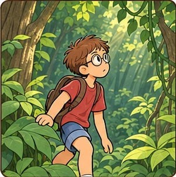
“Here!” said Annie.
He found her in a thick glade.
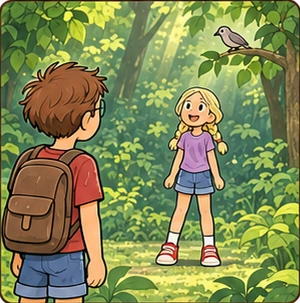
Bright rays streamed between the trees. Green leaves and vines swayed in the dappled light.
The little gray bird sat in a tree, twittering at them.
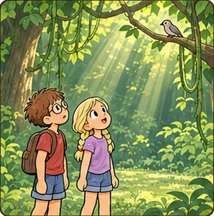
“Yuck, what’s that?” said Annie. She pointed at a round brown thing hanging from a low branch. Bees buzzed around it.
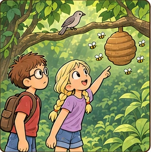
“If that’s her nest, it’s a pretty weird nest,” said Annie.
“That’s not a nest,” said Jack. “It’s a beehive. Don’t you see the bees?”
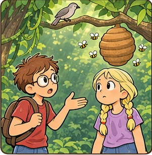
“Yikes,” said Annie. She stepped back from the tree.
But the little bird darted at the beehive and pecked at it.
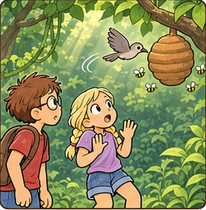
“What’s she doing?” said Annie.
The bird kept pecking at the hive.
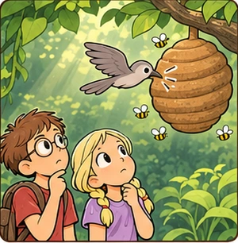
“I don’t know. Maybe she’s as nuts as you,” said Jack.
“Look her up in the book,” said Annie. “See if it says she’s nuts.”
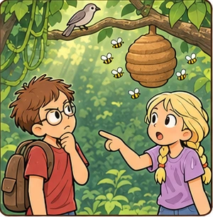
“Are you kidding?” said Jack. “That nutty bird isn’t going to be in this book.”
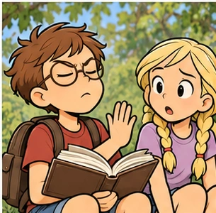
“Just look.”
Jack opened his Africa book. He kept turning the pages. Just as he thought—there was no gray bird in the book.
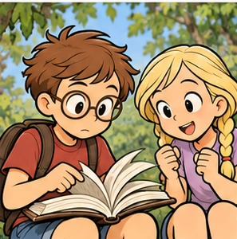
“Forget it,” he said.
“Keep looking,” said Annie.
Jack turned one more page. And there it was: a little gray bird, a beehive, and a tall, painted warrior with a spear.
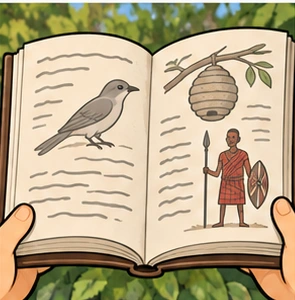
“I don’t believe this,” said Jack.
Then he read aloud:
This bird is called a honey guide. It’s both a friend and a helper to the Masai (muh-SI) people, an African tribe known for their fierce fighting skills and bravery.
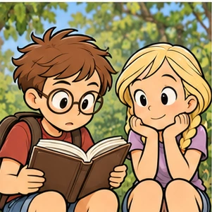
“Hi, honey guide,” Annie called to the bird. “I knew you were important.”
Jack kept reading:
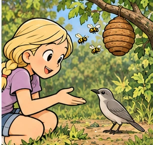
The honey guide leads a Masai tribesperson to a beehive. The bird waits for him or her to scatter the bees and take the honey. Then the bird feasts on the honeycomb.
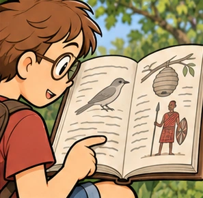